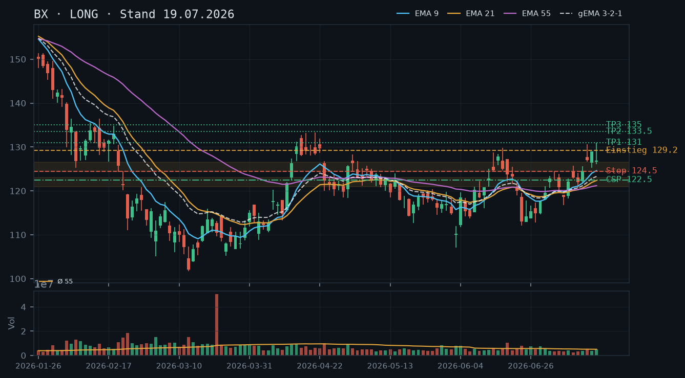
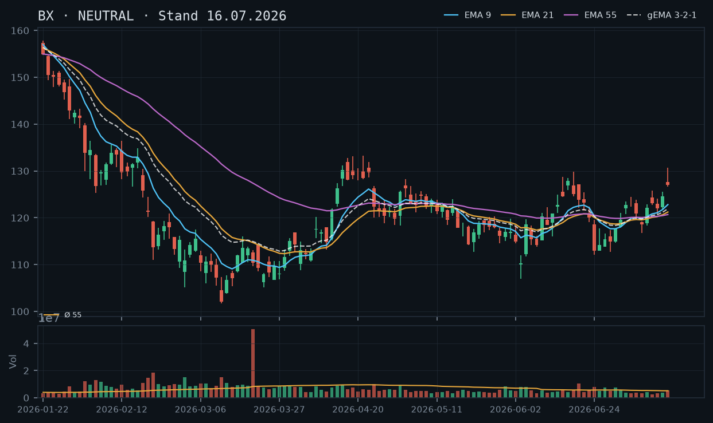
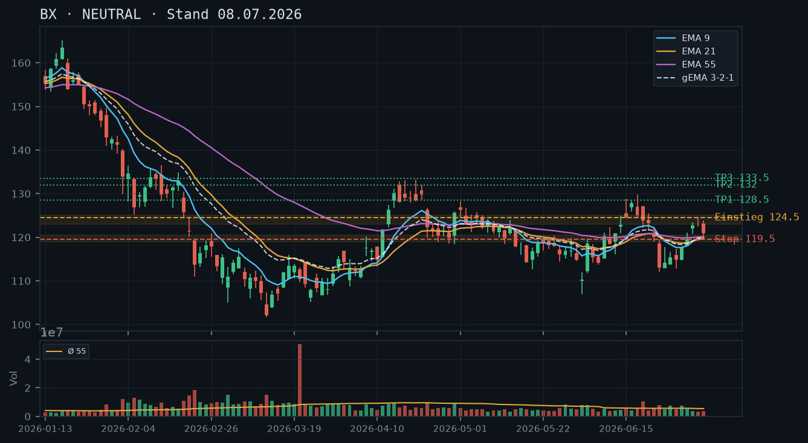

BX
Analyse-Historie · neueste zuerstBX hat nach dem Post-Earnings-Hoch bei 131 eine klare Korrektur eingeleitet – der Kurs notiert wieder unter dem EMA9 und nähert sich dem kritischen Ausbruchsniveau 124–126, das nun als Schlüssel-Support getestet wird.

1 · Trendstruktur
Der Aufwärtstrend seit dem Juli-Tief (~112) ist intakt, aber unter Druck: BX formierte nach dem Earnings-Gap (16.07.) ein Hoch bei 131.00 (17.07.) und korrigiert seitdem in einer Folge niedrigerer Hochs – 128.98 (16.07.) → 131.00 (17.07.) → 127.15 (20.07.) → 125.34 (22.07.). Der Kurs hat damit drei aufeinanderfolgende niedrigere Hochs gebildet, während die Tiefs noch nicht signifikant unterboten wurden. Das entscheidende Level ist die Ausbruchszone 124–126: Sie wurde in der Analyse vom 19.07. als neuer Support identifiziert – dieser Test läuft gerade. Ein Schlusskurs klar unter 123.50 würde das Bild deutlich eintrüben.
2 · Candlestick-Formationen
Die letzten vier Kerzen (17.–22.07.) zeigen ein bearishes Muster im Kontext: Nach dem Shooting-Star-artigen Hoch am 17.07. (Open 126.72, High 131.00, Close 126.91 – langer Docht) folgten drei Kerzen mit komprimierten Bodies und insgesamt abnehmenden Hochs. Die Kerze vom 22.07. (Close 122.82, Low 122.25) ist leicht bearish mit einem Close an der Tagesunterseite – kein Kaufsignal, aber auch keine Panikkerze. Der IBKR-Snapshot zeigt für den 23.07. intraday einen Kurs von 122.04 (-0.64%), womit der Kurs den 22.07.-Close bereits unterschreitet.
3 · EMA-Lage (9 / 21 / 55)
Die EMA-Struktur ist bullisch angeordnet (EMA9 124.06 > EMA21 122.66 > EMA55 121.44), der gema_321 liegt bei 123.16 – der Kurs (122.04 intraday) notiert jedoch bereits unter dem EMA9 und gema_321 und nähert sich dem EMA21 (122.66). Ein Close unter dem EMA21 würde den kurzfristigen Momentum-Vorteil neutralisieren. Der EMA55 bei 121.44 bildet die letzte dynamische Unterstützung vor einem echten Trendbruch.
4 · Trade-Setup
| Richtung | Kein Trade |
| Einstieg | Kein valides Direktional-Setup – erst Stabilisierung über 125.00 abwarten |
| Stop | None |
| Ziel | None |
| CRV | None |
5 · Stillhalter (max. 12 Tage)
Laut IBKR-Snapshot hält Du 100 Aktien BX – damit ist ein Covered Call das saubere Stillhalter-Instrument dieser Marktphase. Angesichts der laufenden Korrektur von 131 auf 122 empfiehlt sich ein CC oberhalb des nächsten Widerstands, um bei einer Erholung etwas zu verdienen, ohne die Aktien zu früh abzugeben. Ein CSP scheidet aus – einen weiteren Put-Verkauf in eine laufende Abwärtskorrektur hinein wäre ein logischer Widerspruch zur aktuellen Vorsicht.
| Geschäft | Covered Call |
| Strike | 130.0 |
| Puffer | 6.5 % |
| Zone | Oberhalb des Hochs vom 17.07. bei 131.00 und des Widerstands 128–131 (mehrfach getesteter Bereich, jetzt Deckel) |
| Verfall bis | 2026-08-01 (9 Tage) |
| Begründung | Der Strike 130.00 liegt ca. 6.5% über dem IBKR-Intraday-Kurs (122.04) und hat den massiven Widerstandscluster 128–131 als Puffer vor sich – dieser Bereich hat dreimal als Deckel fungiert (16.07. High 128.98, 17.07. High 131.00, 20.07. High 127.15, Schlusskurse darunter). Eine Andienung bei 130.00 wäre im Kontext der jüngsten Hochs kein schlechter Ausstieg. In der Optionskette zu prüfen: Prämie sollte mindestens 0.60–1.00 (Mid) betragen, Delta idealerweise zwischen +0.20 und +0.30, Spread eng (< 0.20). Alternativ Strike 132.50 für mehr Puffer, aber dann entsprechend weniger Prämie – Abwägung nach IV-Niveau vornehmen. |
Bestand: Bestand: 100 Aktien BX (IBKR-Snapshot, Long). Keine offene Short-Option im Bestand. Der Covered Call 130 Strike, Verfall 01.08., ist die bevorzugte erste Maßnahme. Roll-Trigger: Sollte BX kräftig erholen und den Strike 130 anlaufen (Delta > 0.50, Kurs > 128), frühzeitig rollen auf Strike 132.50–135 und Verfall 08.08. oder 15.08. – Prämien-Einnahme prüfen. Auf der Unterseite: Fällt BX unter den EMA55 (121.44) und schließt unter 120, sollte der CC vorzeitig zurückgekauft werden (Wertverlust des Calls nutzen), um freie Hand für eine Neubewertung zu haben.
Ausführliche Analyse vom 23.07.2026 anzeigen
BX – Detailanalyse 23.07.2026
1. Trendstruktur & historischer Abgleich
Die Analyse vom 08.07. identifizierte den Long-Trigger bei 124.50 – dieser wurde laut der Folgeanalyse vom 16.07. ausgelöst und lief bis knapp ans Ziel 132.00. Das Hoch bei 131.00 (17.07.) markiert den vorläufigen Höhepunkt dieser Impulsbewegung. Die Analyse vom 19.07. empfahl ein bullisches Setup ab 129.20 – dieses Setup wurde nicht bestätigt: Der Kurs ist seither von 128.97 auf intraday 122.04 (-5.4%) gefallen. Die bullische Einschätzung vom 19.07. ist damit vorerst zu verwerfen.
Trendstruktur im Tagesverlauf seit dem Post-Earnings-Hoch: Niedrigere Hochs (131.00 → 128.98 → 127.15 → 125.34 → intraday 122.04), die Tiefs sind noch nicht klar gebrochen, aber der Druck nimmt zu. Der übergeordnete Aufwärtstrend seit dem Tief 107.03 (03.06.) ist erst bei einem Schlusskurs unter 112.00 strukturell gebrochen.
Zentrale Zonen:
- Support 1: 124–126 – ehemaliger Widerstand (mehrfach getestet März/April/Juni), nach dem Earnings-Ausbruch als Support deklariert. Gerade im Test, noch nicht per Tagesschluss gebrochen.
- Support 2: EMA55 bei 121.44 / Zone 120–121 – dynamische Unterstützung, darunter liegt die Aufwärtstrendlinie aus dem Juni-Tief.
- Support 3: 117–119 – strukturelles Cluster aus dem Juli-Korrekturtief (08.07.) und dem Bereich vor dem Earnings-Gap.
- Widerstand: 128–131 – dreifach getesteter Deckel, klarer Verkaufsdruck bei jedem Anlauf.
2. Candlestick-Analyse
Die Kerze vom 17.07. (High 131.00, Close 126.91) ist ein klassischer Shooting Star auf dem Hochpunkt – hoher Docht, kleiner Body, am oberen Ende der jüngsten Bewegung. Das ist ein erstes Warnsignal, das im Nachhinein klar die Topbildung markiert hat. Die Folgekerzen (20.–22.07.) bestätigen das Muster durch konsistentes Aufeinanderfolgen niedrigerer Hochs bei gleichzeitig bleibendem Abgabedruck. Keine der letzten vier Kerzen zeigt ein bullisches Umkehrmuster (kein Hammer, kein Bullish Engulfing). Der IBKR-Intraday-Kurs (122.04 um 11:36 Uhr) deutet darauf hin, dass die heutige Kerze bisher einen weiteren Abgabetag formt.
3. EMA-Analyse
EMA9 (124.06) > EMA21 (122.66) > EMA55 (121.44) – die Anordnung ist formal bullisch, aber der Abstand komprimiert sich rapide. Der gema_321 (123.16) liegt über dem Kurs (122.04), was bedeutet, dass das gewichtete EMA-System ebenfalls den Kurs nicht mehr stützt, sondern als Widerstand von oben wirkt. Entscheidend: EMA21 bei 122.66 ist die nächste dynamische Unterstützung – ein Tagesschluss darunter öffnet den Weg zum EMA55 bei 121.44. Das Volumen ist in der Korrekturphase unauffällig (rel_volumen 20.–22.07.: 0.94 / 1.04 / 0.80) – kein Verkaufspanik-Signal, aber auch keine Bodenbildung mit Volumenspitze. Das kontrastiert mit dem Aufwärtsimpuls Mitte Juli (15.07.: rel_volumen 1.07), der vergleichsweise schwach war.
4. Trade-Setup-Alternativen
Setup A (Rebound-Long, bedingt): Einstieg erst bei einem Schlusskurs über 126.00 (Rückeroberung der Ausbruchszone), Stop unter 123.50 (unter EMA21), Ziel 130.00 / 131.00. CRV Ziel 1: (130.00-126.00)/(126.00-123.50) = 1.6:1 – gerade noch akzeptabel. Voraussetzung: Volumen beim Ausbruch über 1.3x Schnitt.
Setup B (Short-Trade, opportunistisch): Einstieg bei Schlusskurs unter 121.00 (unter EMA55 und Zone), Stop über 124.00, Ziel 1: 118.50, Ziel 2: 117.00. CRV bis Ziel 1: (121.00-118.50)/(124.00-121.00) = 0.83:1 – zu gering. Kein empfohlenes Setup, aber zu beobachten.
Setup C (Abwarten): Bevorzugtes Szenario – keine Direktionalposition, bis Kurs wieder über gema_321 (123.16) schließt oder klares Reversal-Muster entsteht. Den CC nutzen, um laufende Aktienposition produktiv zu machen.
5. Stillhalter-Detailanalyse (Schwerpunkt)
Covered Call – Strike 130.00, Verfall 01.08.2026 (9 Tage)
Zonen-Herleitung: Der Widerstandscluster 128–131 ist der am besten dokumentierte Deckel der letzten Wochen: (1) 16.07. Intraday-Hoch 128.98, Schlusskurs 128.97 – Kaufdruck ließ nach; (2) 17.07. Intraday-Hoch 131.00 mit Shooting-Star-Abschluss; (3) 20.07. Hoch bei nur 127.15 – der Markt erreichte das vorherige Niveau nicht mehr. Der Strike 130.00 liegt mittig in diesem Cluster. Der Puffer vom Intraday-Kurs 122.04 beträgt ca. 6.5% – das ist komfortabel für eine 9-tägige Laufzeit und bietet genug Spielraum, um selbst bei einem partiellen Rebound unter dem Strike zu bleiben.
Andienungsszenario: Wird BX bis 01.08. auf 130+ angezogen, wäre eine Abgabe der 100 Aktien bei 130.00 kein schlechtes Ergebnis – der Kauf auf dem aktuellen Tief-Niveau (oder tiefer) und ein Verkauf bei 130 entspräche einem Aufwärtspotenzial von ~6.5% in 9 Tagen zuzüglich der vereinnahmten Prämie. Wäre das Andienungsrisiko unerwünscht, wäre Strike 132.50 die Alternative mit ca. 8.6% Puffer und weniger Andienungswahrscheinlichkeit.
Roll-Trigger (konkret):
- Aufwärts-Roll: Kurs > 127.00 und Delta des offenen CC > 0.45 → Rückkauf und Roll auf Strike 132.50–135 / Verfall 08.08.2026. Nettoprämie prüfen (mindestens Credit-neutral).
- Vorzeitiger Rückkauf (Unterseite): CC hat 80%+ seines Zeitwerts verloren (Kurs > 0.15 unter Verkaufserlös) → Prämie mitnehmen, neu bewerten. Oder: Kurs fällt unter EMA55 (121.44) per Tagesschluss → CC zurückkaufen und Aktienposition überprüfen.
Was in der Optionskette zu prüfen ist: Prämie für CC 130, Verfall 01.08.: sollte > 0.60 (Mid) liegen, Delta ca. +0.20–0.30 (OTM-Bereich), Spread eng (< 0.20), Open Interest > 300 für ausreichende Liquidität. Alternativ 08.08. als Verfall (16 Tage, außerhalb der 12-Tage-Regel) nur dann wählen, wenn 01.08. unzureichende Prämie zeigt – in diesem Fall 132.50er Strike bevorzugen.
CSP – warum nicht: In einer laufenden Korrektur mit niedrigeren Hochs und einem Kurs, der gerade unter gema_321 und EMA9 abtaucht, ist ein weiterer Short Put weder logisch konsistent noch risikoadjustiert sinnvoll. Die Zone 120–121 (EMA55) hat noch keinen Test hinter sich – ein CSP darunter (etwa 117.50) wäre zwar technisch denkbar, aber der Puffer wäre zu klein für das aktuelle Momentum. CSP erst wieder prüfen, wenn der Kurs im Bereich 120–122 stabilisiert und ein Reversal-Signal (Hammer, Bullish Engulfing auf erhöhtem Volumen) zeigt.
6. Abgleich mit früheren Analysen
Der CSP-Strike 122.50 aus der Analyse vom 19.07. ist obsolet: Der aktuelle Intraday-Kurs liegt bereits bei 122.04, der Strike wäre praktisch im Geld. Das bestätigt die Logik der Verkettungs-Prüfung – der damalige Strike lag zu nah am Kurs für Korrekturen dieser Art. Die bullische Gesamteinschätzung vom 19.07. wird durch die aktuelle Datenlage verworfen; die neutrale Einschätzung mit Vorsicht ist jetzt das passende Framing.
BX hat nach den Q2-Earnings einen sauberen Ausbruch über den Widerstandsbereich 125–128 vollzogen und hält die Gewinne – der Trend ist bullisch, EMAs drehen nach oben, CSP unterhalb der Ausbruchszone ist das bevorzugte Stillhalter-Setup.

1 · Trendstruktur
BX zeigt seit dem Tief bei ca. 107 (Anfang Juli) eine Sequenz steigender Hochs und steigender Tiefs: 118.62 → 122.15 → 123.09 → 124.56 → 127.05 → 128.97 – klassische Uptrend-Struktur. Der entscheidende Ausbruch gelang am 15.07. über den Widerstandscluster 125–128 (mehrfache Tests März/April und Juni), der jetzt als Support fungiert. Das Post-Earnings-Hoch vom 17.07. bei 131.00 ist der nächste Widerstand; darunter konsolidiert BX aktuell in einer engen Range 127–129.
2 · Candlestick-Formationen
Die letzten drei Kerzen zeigen ein typisches Post-Earnings-Verhalten: starke Aufwärtskerze am 15.07. (127.68→130.65, close 127.05), dann zwei Inside-Bar-ähnliche Kerzen am 16.07. (close 128.97) und 17.07. (close 126.91) mit langen Oberschatten – Doji-Charakter, der Erschöpfung und Verdauung des Anstiegs signalisiert, aber keinen Distribution-Druck. Kein bärisches Umkehrmuster erkennbar; die Kerzen halten klar über der alten Widerstandszone.
3 · EMA-Lage (9 / 21 / 55)
Die EMA-Struktur ist wieder bullisch geordnet: EMA9 (124.62) > EMA21 (122.38) > EMA55 (121.20) – alle drei drehen nach oben, der gema_321 (123.30) steigt ebenfalls. Der Kurs notiert deutlich über allen drei EMAs (~4–6 %), was kurzfristig auf leichte Überdehnung hinweist, aber im Ausbruchs-Kontext akzeptabel ist. EMA9 und EMA21 haben ihren Golden-Cross-Bereich klar hinter sich gelassen; ein Pullback zur EMA9-Zone (ca. 125) wäre technisch gesund.
4 · Trade-Setup
| Richtung | Long |
| Einstieg | 129.20 (Stop-Buy über das Intraday-Hoch 19.07., Bestätigung der Fortsetzung) |
| Stop | 124.50 (unter EMA9 und Ausbruchsniveau) |
| Ziel | 135.00 (Projektion aus der Basis, nächster signifikanter Widerstand) |
| CRV | 2.3 : 1 |
5 · Stillhalter (max. 12 Tage)
Der bullische Trend mit sauberem Ausbruch über 125–128 prädestiniert BX klar für einen Cash-Secured Put. Die Ausbruchszone 124–126 liefert einen technisch validen Support-Cluster, der als Puffer vor dem Strike fungiert. Ein Covered Call scheidet aus – kein Aktienbestand vorhanden (0 Shares laut IBKR-Snapshot), ein Naked Call hätte ein grundlegend anderes Risikoprofil und wird nicht empfohlen.
| Geschäft | Cash-Secured Put |
| Strike | 122.5 |
| Puffer | 5.0 % |
| Zone | Unterhalb der Ausbruchszone 124–126 (mehrfach getesteter Widerstand März/April/Juni, jetzt Support) und oberhalb des EMA55 bei 121.20 |
| Verfall bis | 2026-07-25 (6 Tage) |
| Begründung | Strike 122.50 liegt ca. 5 % unter dem aktuellen Kurs (128.97) und hat zwei technische Puffer vor sich: (1) die Ausbruchszone 124–126, die nach dem Bruch als Support wirkt, und (2) den EMA55 bei 121.20 als dynamische Unterstützung. Eine Andienung zum Strike 122.50 wäre fundamental vertretbar – BX handelt dort auf dem Niveau vor dem Earnings-Gap und oberhalb der Juli-Basisstruktur. In der Optionskette ist zu prüfen: Praemie sollte mindestens 0.50–0.80 (Mid) erbringen, Delta idealerweise zwischen -0.15 und -0.25, Spread eng (< 0.20) und Open Interest > 200. |
Ausführliche Analyse vom 19.07.2026 anzeigen
BX – Detailanalyse 19.07.2026
1. Trendstruktur & Abgleich frühere Analysen
Die Analyse vom 08.07. hatte einen Long-Trigger bei 124.50 formuliert – dieser wurde ausgelöst und lief, wie die 16.07.-Analyse festhielt, bis knapp ans Ziel von 132.00 (Hoch 131.00 am 17.07.). Dieser Verlauf ist nun zu bestätigen: Der Trade hat geliefert, das Setup war valide. Die Vorsicht der 16.07.-Analyse wegen der Q2-Earnings war ebenfalls korrekt – die Reaktion war jedoch konstruktiv bullisch und kein Gap-Down.
Die aktuelle Trendstruktur ist klar: BX hat sich vom Tief bei 116.80 (08.07.) auf 131.00 (17.07.) erholt – ein Anstieg von +12 % in sieben Handelstagen. Entscheidend ist die Zone 125–128: Diese wurde im März (Hochs 17.–20.03.), April (Basis 14.–17.04.) und Juni (mehrfach 15.–18.06.) als Widerstand etabliert und nun per Earnings-Reaktion überwunden. Ein Pullback in diese Zone wäre ein klassischer Retest, kein Trendbruch.
Key Levels:
- Support 1 (Ausbruchszone): 124.50–126.50 – mehrfach bestätigt, jetzt Schlüsselsupport
- Support 2 (EMA-Cluster): 121–123 (EMA9 ca. 124.62, EMA21 ca. 122.38, EMA55 ca. 121.20 – konvergierend)
- Support 3 (Juli-Basis): 118–120 (Tiefs 08./09.07.)
- Widerstand 1: 131.00 (Post-Earnings-Hoch 17.07.)
- Widerstand 2: 133–133.50 (April-Hochs 17./21.04., ungetestet von unten)
2. Candlestick-Formationen
Die Kerze vom 15.07. (open 127.68, high 130.65, close 127.05) ist eine starke Aufwärtskerze mit Oberschatten – der Kurs testete 130+ und schloss knapp unter dem Hoch. Das ist Kaufkraft, aber mit erstem Widerstand. Am 16.07. (close 128.97) wurde das vorherige Close überboten, am 17.07. (open 126.72, high 131.00, close 126.91) bildete sich eine Shooting-Star-ähnliche Kerze mit langem Oberschatten und Close nahe Open – kurzfristig bärisches Signal, aber im Ausbruchs-Kontext als normale Konsolidierung zu werten, nicht als Umkehrsignal. Das rel_volumen blieb am 17.07. bei 0.95 – kein erhöhtes Distribution-Volumen, was das konstruktive Bild unterstützt.
Auffällig: Die Hochvolumen-Tage (20.03. mit rel_volumen 6.10 – außergewöhnlicher Ausreißer, wohl Rebalancing/Index-Event) liegen weit zurück; die jüngste Phase seit Juni läuft mit unterdurchschnittlichem bis normalem Volumen, was typisch für einen kontrollierten Trend ist.
3. EMA-Lage & gema_321
EMA9 (124.62) > EMA21 (122.38) > EMA55 (121.20) – perfekte bullische Ordnung, alle drei steigen. Der gema_321 bei 123.30 steigt ebenfalls und liegt ca. 4.4 % unter dem Kurs, was eine moderate Überdehnung anzeigt. Historisch hat BX in dieser Phase (April-Anstieg) ähnliche Spreads gezeigt bevor es zur kurzen Konsolidierung kam. Ein Pullback auf gema_321 (~123–124) wäre technisch sauber und würde das Setup nicht beschädigen.
Wichtig: Die Phase Mai–Juni zeigte eine komprimierte EMA-Struktur (alle drei EMAs sehr eng beieinander um 120–122), die jetzt aufgelöst ist. Der Kurs hat die EMAs von unten nach oben durchbrochen und baut Abstand auf – das ist Trendstärke, kein Warnsignal.
4. Trade-Setups (Alternative A/B/C)
Setup A (bevorzugt) – Momentum-Long auf Ausbruchsfortsetzung:
- Einstieg: 129.20 (Stop-Buy über Intraday-Hoch 19.07.)
- Stop: 124.50 (unter Ausbruchszone)
- Ziel 1: 131.00 (Post-Earnings-Hoch) → CRV ca. 0.7:1 (zu eng für eigenständigen Trade)
- Ziel 2: 133.50 (April-Hochs) → CRV ca. 1.8:1
- Ziel 3: 135.00 (Projektion aus Basis 118–126, +7 %) → CRV ca. 2.3:1
Setup B – Pullback-Long auf Ausbruchszone:
- Einstieg: Limit 125.50 (Retest Ausbruchszone mit Bestätigung, z.B. Hammer/Bullish Engulfing)
- Stop: 123.00 (unter Zone und EMA21)
- Ziel 1: 131.00 → CRV ca. 2.2:1
- Ziel 2: 135.00 → CRV ca. 3.6:1
- Vorteil: Besseres CRV, engerer Stop; Nachteil: Pullback muss erst eintreten
Setup C – Short (konträr, niedrige Priorität):
- Nur valide bei Tagesschluss unter 124.50 mit erhöhtem Volumen (> 1.5x Schnitt)
- Kein aktives Setup zum jetzigen Zeitpunkt – wird nicht empfohlen
5. Stillhalter-Setups (Schwerpunkt)
Cash-Secured Put – Detailherleitung:
Der Strike 122.50 wird wie folgt technisch hergeleitet: Die Ausbruchszone 124–126 liefert den primären Puffer. Darunter liegt der EMA21 (122.38), der dynamisch steigt und als zweite Verteidigungslinie fungiert. Ein Strike direkt auf oder in die Zone zu legen wäre ein Logikfehler (die Zone soll als Puffer vor dem Strike liegen, nicht dahinter). Daher wird der Strike knapp unter EMA21 bei 122.50 gewählt – das entspricht dem nächsten handelsüblichen 2.50er-Strike und gibt zwei technische Barrieren als Puffer.
Andienungsszenario: Eine Andienung bei 122.50 wäre akzeptabel. BX würde dort auf dem Niveau der Juli-Konsolidierung (vor dem Earnings-Gap) gehandelt, die EMAs wären noch intakt, und der Trend wäre zwar unter Druck, aber noch nicht gebrochen. Als Aktionär wäre man zu einem aus technischer Sicht attraktiven Level positioniert – Breakeven nach Praemieneinnahme noch etwas tiefer.
Roll-Trigger: Ein Roll oder Schließung des CSP wird fällig, wenn (a) der Kurs die Ausbruchszone 124–126 per Tagesschluss unterschreitet, (b) das Volumen dabei > 1.5x Schnitt liegt, oder (c) das Delta des Puts auf -0.40 oder tiefer steigt. In diesen Fällen: Roll auf Strike 120.00, Verfall nächster Freitag (01.08.2026), oder Schließung mit Verlustbegrenzung bei 2x Praemie.
Was in der Optionskette zu prüfen ist:
- Praemie (Mid) für CSP 122.50, Verfall 25.07.: Mindestens 0.50 anstreben; unter 0.30 ist das Verhältnis aus Puffer und Praemie nicht attraktiv
- Delta: Zielbereich -0.15 bis -0.25
- Bid-Ask-Spread: Unter 0.20 für ausreichende Liquidität
- Open Interest: > 200 Kontrakte am Strike
Covered Call / Naked Call: Kein Aktienbestand (0 Shares, IBKR-Snapshot 12:08 Uhr). Ein Covered Call ist damit nicht möglich. Ein Naked Call oberhalb von 131.00–133.00 hätte theoretisch eine technische Basis (Widerstandszone), aber das unbegrenzte Verlustrisiko eines Naked Calls passt nicht zur moderaten Risikotoleranz des Ansatzes. Daher: CC/NC wird für diesen Titel zum jetzigen Zeitpunkt nicht empfohlen.
Hinweis zum IBKR-Snapshot: Der Snapshot wurde um 12:08 Uhr erfasst, zum Zeitpunkt dieser Analyse (19.07.) ist der Kurs mit 128.97 und 0.0 % Veränderung angegeben – dies deutet auf einen frühen Intraday-Snapshot hin. Die technischen Levels basieren auf dem letzten Tagesschluss (17.07.: 126.91). Der aktuelle Kurs von 128.97 im Snapshot entspricht dem Schlusskurs vom 16.07. – hier liegt möglicherweise eine Verzögerung vor. Die Analyse nutzt den letzten verfügbaren Tagesschluss (17.07.) als Basis; der Snapshot-Kurs wird für die Puffer-Berechnung vorsichtshalber als Referenz verwendet (Puffer ~5.0 %).
WICHTIG: Diese Analyse basiert auf Daten bis 15.07. – BX veröffentlicht die Q2-Zahlen heute (16.07.) vor Börsenöffnung. Der ursprüngliche Long-Trigger vom 08.07. wurde zwar ausgelöst und lief bis knapp ans Ziel, aber jede Bewertung auf Basis der Vor-Earnings-Daten ist für aktuelle Entscheidungen nicht mehr verlässlich.

1 · Trendstruktur
Auf Basis der Daten bis 15.07. (vor den Zahlen): Der Long-Trigger der 08.07.-Analyse (124,50) wurde am 09.07. ausgelöst (Hoch 122,85, dann 07/10 Hoch 125,77 klar darüber). Nach einer Konsolidierung 118,62–125,56 (08.–14.07.) sprang der Kurs am 15.07. – vermutlich in Erwartung der heutigen Zahlen – auf ein neues Hoch von 130,65, Schluss 127,05, nahe dem ursprünglichen Ziel 132,00. Diese gesamte Struktur wird durch die heutige Zahlenveröffentlichung neu bewertet.
2 · Candlestick-Formationen
14.07.: Schluss 124,56, solide Erholung. 15.07.: Gap-up-Eröffnung 127,68 (+2,5% ggü. Vortagesschluss), Hoch 130,65, Schluss 127,05 – ein typisches Vor-Earnings-Positionierungsmuster (rel_volumen 1,07, leicht erhöht), keine Aussage über die tatsächliche Reaktion auf die heute veröffentlichten Zahlen.
3 · EMA-Lage (9 / 21 / 55)
Stand 15.07.: EMA9 (122,82) > EMA21 (121,23) > EMA55 (120,69), bullisch, aber diese Werte werden sich mit der heutigen Kursreaktion auf die Zahlen ohnehin verschieben und sind für eine aktuelle Entscheidung von untergeordneter Bedeutung.
4 · Trade-Setup
| Richtung | Kein Trade |
| Einstieg | Kein valides Setup auf Basis der Vor-Earnings-Daten – nach Vorliegen der heutigen Zahlen und der tatsächlichen Kursreaktion neu bewerten |
| Stop | None |
| Ziel | None |
| CRV | None |
5 · Stillhalter (max. 12 Tage)
Eine Stillhalter-Empfehlung auf Basis der 15.07.-Daten wäre nicht seriös: BX meldet die Zahlen genau heute, vor Handelsbeginn. Die implizite Volatilität dürfte nach der Veröffentlichung stark fallen (IV-Crush), und jede vor den Zahlen abgeleitete Zone kann durch die Reaktion in beide Richtungen sofort überholt sein.
Ausführliche Analyse vom 16.07.2026 anzeigen
BX – Analyse auf Basis von Daten unmittelbar vor den Q2-Zahlen
1. Was die Vor-Earnings-Daten zeigen
Der Long-Trigger vom 08.07. (124,50) hat sauber ausgelöst und lief bis auf ein Hoch von 130,65 am 15.07. – nur 1,35 Punkte unter dem ursprünglichen Ziel 132,00. Der kräftige Gap-up am 15.07. (+2,5% zur Eröffnung) deutet auf positive Vorab-Positionierung hin, ist aber nicht die eigentliche Reaktion auf die Geschäftszahlen.
2. Warum das jetzt zweitrangig ist
Blackstone veröffentlicht die Q2-2026-Zahlen exakt heute (16.07.) vor Börsenöffnung. Aus dem letzten Quartalsbericht (Q1) ist bekannt, dass das Management bereits auf Gegenwind durch geopolitische Volatilität, langsamere Realisierungsaktivität und konzentrierte Softwarebewertungsdruck sowie Rücknahmen in gewissen Kredit-Retail-Vehikeln (BCRED) hingewiesen hatte – gleichzeitig aber starke Skalen- und Fundraising-Dynamik betonte. Wie der Markt die heutigen Zahlen genau interpretiert, lässt sich aus den Vortagesdaten nicht ableiten.
3. Empfehlung für dein weiteres Vorgehen
Warte auf die tatsächliche Kursreaktion (idealerweise nach den ersten Handelsstunden), bevor du neue Zonen, Trigger oder Stillhalter-Strikes ableitest. Der bisherige Long-Trigger und das Ziel 132,00 waren technisch sauber, aber sie sagen nichts darüber aus, wie der Kurs auf die heutigen Zahlen reagieren wird.
4. Kein Stillhalter-Vorschlag heute
Eine Options-Position unmittelbar vor oder am Tag einer Gewinnveröffentlichung auf Basis vorheriger Zonen einzugehen, würde bedeuten, bewusst gegen ein bekanntes, aber in seiner Richtung unbekanntes Ereignis zu verkaufen – das widerspricht der moderaten Risikotoleranz-Vorgabe.
5. Abgleich mit früherer Analyse
Die Long-These vom 08.07. wird durch die Kursentwicklung bis 15.07. bestätigt und lief fast bis zum Ziel. Für die Zeit ab heute ist jedoch eine komplette Neubewertung nach Vorliegen der Q2-Zahlen nötig.
BX befindet sich nach einem scharfen Ausverkauf in einer Erholungsphase, die EMAs nähern sich an, aber es fehlt noch eine klare Bestätigung für einen neuen Trendimpuls.

1 · Trendstruktur
BX fiel von ~140 (Feb) auf ein Tief bei ~101 (12. März), seitdem eine mehrwöchige Erholung bis ~133 (April), gefolgt von einem erneuten Rücksetzer auf ~107 (Juni). Aktuell bei ~121 befindet sich die Aktie in einer breiten Erholungszone zwischen 112 und 130. Es gibt noch kein höheres Tief über dem Juni-Tief bei 112, das die Aufwärtsstruktur klar bestätigen würde.
2 · Candlestick-Formationen
Die letzte Kerze (07.07.) zeigt einen Rücksetzer von 123,08 auf 120,89 mit einem Tagestief bei 119,72 – ein leicht bearisher Intraday-Reversal nach dem Hoch bei 123,81. Zuvor (06.07.) ein bullischer Stab, der knapp unter dem 52W-Resistance-Bereich bei ~124–125 abprallte. Das Volumen beider Tage war unterdurchschnittlich (0,58 und 0,70), was auf mangelnde Überzeugung hindeutet.
3 · EMA-Lage (9 / 21 / 55)
EMA9 (120,08) < EMA21 (119,63) < EMA55 (120,11) – die drei EMAs liegen extrem eng beieinander und konvergieren, was auf eine Konsolidierungsphase hindeutet. Der gema_321 bei 119,94 liegt knapp unter dem aktuellen Kurs (~120,89), was leicht bullisch zu werten ist. Eine klare bullische EMA-Reihenfolge (9>21>55) ist noch nicht hergestellt.
4 · Trade-Setup
| Richtung | Long |
| Einstieg | 124.50 (Stop-Buy über das Hoch vom 06.07. und Ausbruch über den Widerstandsbereich) |
| Stop | 119.50 |
| Ziel | 132.00 |
| CRV | 1.5 : 1 |
Ausführliche Analyse vom 08.07.2026 anzeigen
BX – Detailanalyse (Stand: 08.07.2026)
1. Trendstruktur
BX hat zwischen Februar und März 2026 eine massive Korrektur von ca. 140 USD auf ein Tief von 101,73 (12.03.) erlebt – ein Verlust von rund 27%. Das Volumen am 12.03. war mit rel_volumen 2,24 signifikant erhöht, was auf panisches Verkaufen hindeutete. Anschließend startete eine kräftige Erholungsbewegung, die bis zum 17.04. ein Hoch von 133,15 erreichte.
Ab Ende April setzte eine zweite Korrekturwelle ein, die die Aktie bis auf ein Tief bei 107,03 (03.06., rel_volumen 1,15) drückte. Dieses Tief liegt oberhalb des März-Tiefs von 101,73, was strukturell positiv ist und ein höheres Tief im potenziellen Aufwärtstrend darstellt. Von dort aus erholte sich BX wieder auf aktuell ~121.
Wichtige Kursniveaus:
- Starker Widerstand: 128–133 (Aprils-Hochzone)
- Widerstand: 124–125 (zuletzt abgeprallt am 06.07.)
- Unterstützung: 119–120 (EMA-Cluster, gema_321)
- Unterstützung: 112–113 (Juni-Tief-Zone)
- Kritische Unterstützung: 107 (03.06.-Tief)
2. Candlestick-Formationen
Die letzten Kerzen zeigen ein differenziertes Bild: Am 01.07. und 02.07. sehen wir starke bullische Aufwärtskerzen mit höheren Schlusskursen (119,55 → 122,78), was die Erholung vom Juni-Tief bestätigt. Am 06.07. (123,42) und 07.07. (120,89) zeigt sich jedoch eine Schwäche: Das Hoch bei 123,81 am 07.07. wurde nicht gehalten, und der Schlusskurs fiel deutlich darunter. Diese Kerze ähnelt einem Bearish Engulfing-Muster im Bereich der Widerstandszone 123–124 – ein Warnsignal.
Das niedrige Volumen an beiden Tagen (0,58 und 0,70 × Durchschnitt) relativiert die Aussagekraft; es fehlt der Verkaufsdruck, aber auch der Kaufdruck für einen Ausbruch nach oben.
3. EMA-Lage
Die EMA-Konstellation ist aktuell neutral bis leicht konstruktiv: EMA9 = 120,08, EMA21 = 119,63, EMA55 = 120,11. Alle drei liegen in einem engen Band von weniger als 0,5 Punkten – eine klassische Konvergenz nach einer volatilen Phase. Der gema_321 = 119,94 liegt minimal unter dem Schlusskurs (120,89), was bedeutet, dass die Aktie gerade beginnt, über ihren gewichteten EMA-Verbund zu steigen.
Positiv: EMA9 > EMA21 (wenn auch minimal) – eine bullische Kreuzung hat stattgefunden. Negativ: EMA55 (120,11) liegt noch leicht über EMA9 und EMA21, die bullische Reihenfolge EMA9 > EMA21 > EMA55 ist noch nicht vollständig etabliert. In den Wochen zuvor (März bis Mai) war die EMA-Reihenfolge durchgehend bearish (EMA9 < EMA21 < EMA55). Die aktuelle Annäherung ist ein potenzieller Wendepunkt, aber noch kein Kaufsignal.
4. Trade-Setup (Alternativen)
Setup A – Long-Ausbruch (bevorzugt): Einstieg per Stop-Buy bei 124,50, wenn BX das Hoch vom 06.07. (124,47) überwindet und damit den Widerstandsbereich 123–124 nach oben verlässt. Stop bei 119,50 (unterhalb des EMA-Clusters und des 07.07.-Tiefs von 119,72). Ziel 1: 128,50 (CRV ca. 0,8:1 – zu eng). Ziel 2: 132,00 (April-Hoch-Zone, CRV ca. 1,5:1). Ziel 3: 133,50 (absolutes April-Hoch, CRV ca. 1,8:1). Bedingung: Volumen beim Ausbruch sollte rel_volumen > 1,5 zeigen.
Setup B – Long nach Rücksetzer: Einstieg im Bereich 119,50–120,50 (EMA-Cluster, gema_321), wenn die Aktie erneut in diese Zone zurückfällt und dort eine bullische Kerze zeigt. Stop bei 117,50 (unterhalb des 01.07.-Tiefs von 117,95). Ziel: 128,50 (CRV ca. 3,5:1). Dieses Setup bietet das beste CRV, erfordert aber Geduld.
Setup C – Short bei Scheitern: Wenn BX unter 119,00 fällt und den EMA-Cluster von unten durchbricht, Short-Einstieg mit Stop 122,50 und Ziel 113,00 (CRV ca. 1,8:1). Dieses Szenario wird wahrscheinlicher, wenn das Volumen beim Rückfall erhöht ist.
Bevorzugtes Setup: A (Long-Ausbruch), da die übergeordnete Struktur (höheres Tief im Juni vs. März) konstruktiv ist und die EMAs konvergieren. Allerdings ist Vorsicht geboten, da der Widerstand bei 124–125 zuletzt zweimal abgewiesen hat und das Volumen schwach ist. Ein Ausbruch mit Volumen wäre das stärkste Signal.